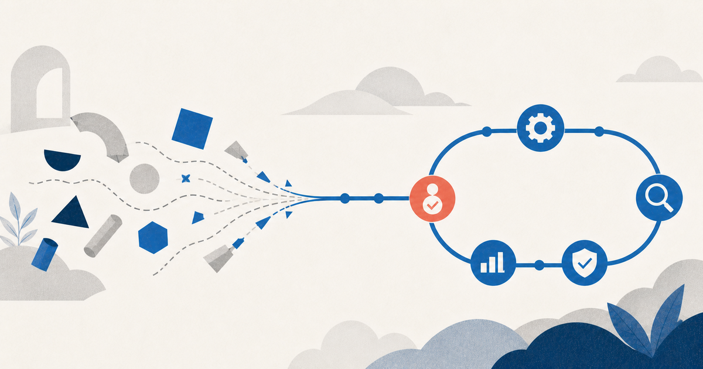
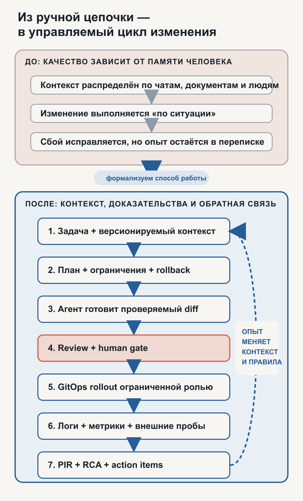
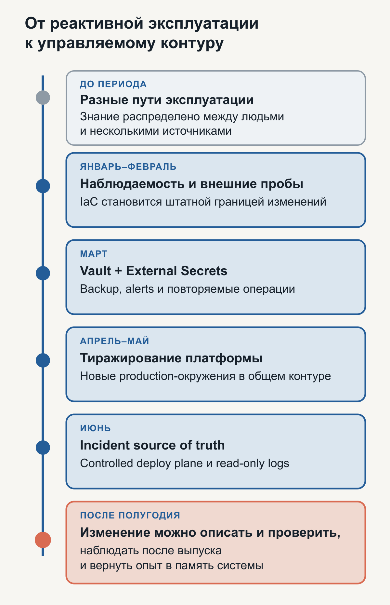
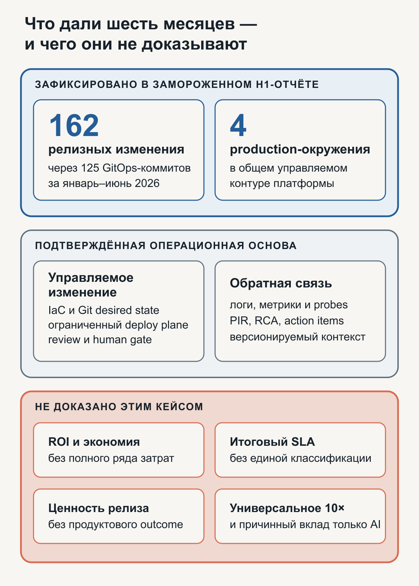

Внедрение агентной разработки: результаты за полгода и границы метрик
Анонимизированный production-кейс: 162 отчётных релизных изменения, четыре окружения и честный разбор того, чего эти цифры не доказывают.

В замороженном отчёте проекта за полгода зафиксированы 162 релизных изменения в production через 125 GitOps-коммитов и четыре новых production-окружения. Но главный результат — не количество выкладок. Главный результат — система, в которой изменение можно описать, выполнить, проверить, наблюдать и разобрать после сбоя.
Обычно кейс внедрения AI начинают с эффектной цифры: «код пишется в десять раз быстрее» или «агент заменил команду». У меня такой цифры нет — и это хорошо. В реальном production скорость набора кода сама по себе почти ничего не говорит о результате.
Можно быстро сгенерировать неправильное изменение. Можно выпустить много релизов, которые не принесли продуктовой ценности. Можно автоматизировать выкладку и одновременно открыть агенту опасный доступ. Поэтому я смотрю на агентную разработку не как на нового программиста, а как на производственную систему изменений.
Эта статья разбирает первые шесть месяцев такой системы на одном анонимизированном проекте.
Обещание статьи: показать CTO и техлиду проверяемый production-кейс — исходную ситуацию, устройство агентного контура, подтверждённые результаты, ограничения измерений и ту часть подхода, которую можно перенести в другой проект.
С чего мы начинали
Это был не greenfield и не лабораторный сервис. В проекте уже работала транзакционная production-система, а рядом с ней — несколько поколений инфраструктуры. Часть компонентов жила на отдельных серверах, часть — в Kubernetes. Способы выкладки, просмотра логов и восстановления зависели от конкретного окружения. Знание было распределено между Git, внутренними документами, чатами и памятью нескольких людей.
Такую систему нельзя безопасно «отдать агенту». Чем больше агент умеет делать, тем опаснее неявные правила. Если человеку достаточно устной договорённости «в production так не делаем», то агенту нужна исполнимая граница: какой источник считается каноническим, какие действия разрешены, чем подтверждается результат и где обязателен человек.
Поэтому первой задачей было не ускорение кода. Сначала требовалось сделать саму среду читаемой и управляемой:
- описать архитектуру, окружения и правила работы рядом с кодом;
- перевести изменения инфраструктуры в декларативный контур Git и Helmfile;
- отделить диагностику от мутации production;
- централизовать логи, метрики и алерты;
- вынести секреты в управляемое хранилище и ограничить права;
- связать инцидент, подтверждённые факты, анализ первопричины (RCA) и последующие задачи;
- сохранить решения так, чтобы следующая сессия начиналась не с археологии.
Это скучная часть агентной разработки. И именно она определяет, получится производственная система или набор эффектных демо.
Что я называю агентной разработкой
Coding assistant отвечает на вопрос в редакторе. Coding agent получает задачу и выполняет последовательность действий. Агентная разработка начинается там, где вокруг агента появляется повторяемый контур работы.
В нашем случае он состоял из семи элементов:
- Версионируемый контекст. Репозиторные инструкции, Memory Bank, архитектурные документы, планы изменений и операционные инструкции (runbook) объясняют агенту текущее устройство системы.
- Явные ограничения. Изменения инфраструктуры проходят через Infrastructure as Code (IaC); прямые мутации production запрещены обычным процессом.
- Ограниченные инструменты и права. Агент может исследовать состояние и подготовить diff, но чувствительные действия остаются за узкой ролью и обязательным решением человека (human gate).
- План до изменения. Для миграций и рискованных операций сначала фиксируются границы, то, что намеренно не делается, критерии приёмки, откат и проверенные предпосылки.
- Проверяемый diff. Код, конфигурация и желаемое состояние (desired state) проходят Git, review и автоматические проверки.
- Наблюдение после выкладки. Централизованные логи, метрики, внешние пробы и алерты дают общий язык для проверки результата.
- Память после сбоя. Инцидент заканчивается не сообщением «починили», а паспортом, RCA, предотвращающими задачами и обновлением правил или документации.

Здесь важно слово «система». AGENTS.md сам по себе не внедряет агентную разработку. Kubernetes, GitOps и Grafana тоже не внедряют её по отдельности. Эффект появляется, когда агент может пройти по связному маршруту от намерения до доказательства, а опасный обход этого маршрута затруднён.
Как менялся контур за полгода
В Git-истории видны не только отдельные задачи, но и последовательность сборки производственной системы.
Январь–февраль: наблюдаемость и правила изменения. В репозитории появились и укрепились autoscaling, внешние проверки доступности, панели и алерты. Документация зафиксировала единый принцип: инфраструктура меняется через Helmfile и Git, а прямой kubectl apply не является штатным способом работы. Параллельно началась привязка инцидентов к паспортам и источникам фактов.
Март: секреты и воспроизводимые операции. Развёрнуты Vault HA и External Secrets Operator, добавлены резервные копии и алерты, приложения и инфраструктурные сервисы начали переводиться с локальных секретов на управляемую схему. Важен не бренд инструмента, а изменение модели: секрет больше не должен путешествовать вместе с инструкцией для агента.
Апрель–май: тиражирование платформы. В управляемый контур последовательно вошли новые production-окружения. Для них переиспользовались Helmfile-конфигурации, шаблоны приложений, HPA/PDB, мониторинг, хранилища секретов и миграционные runbook. Пик релизных изменений пришёлся именно на этот период.
Июнь: замыкание контура управления. Инцидентная документация получила явные источники истины и роли. Появился pull-based deploy plane с ручным sync, минимальными production-правами и аудитом через Git и историю контроллера. Разработчикам был выделен канонический read-only путь к логам без права записи.

Такой порядок кажется медленным, если мерить прогресс количеством сгенерированного кода. Но его повторная польза становится заметна уже на второй и третьей похожей задаче. Агенту не нужно заново выяснять, как устроено окружение, где брать логи, каким способом менять ресурс и что считать успешной выкладкой.
Что подтверждают источники
162 релизных изменения через 125 GitOps-коммитов
В замороженном отчёте за первое полугодие, собранном по GitOps-истории, зафиксированы 162 целевых изменения версий приложений в production:
Таблицу можно прокрутить по горизонтали.
| Месяц 2026 года | Релизные изменения |
|---|---|
| Январь | 19 |
| Февраль | 5 |
| Март | 6 |
| Апрель | 53 |
| Май | 46 |
| Июнь | 33 |
| Всего | 162 |
Этим изменениям соответствуют 125 GitOps-коммитов. В отчёте разница объясняется так: один коммит мог обновить несколько production-окружений; в таком случае каждое окружение считалось отдельным релизным изменением.
Апрель и май дали 99 изменений, или 61% полугодового объёма. Это совпадает с периодом миграций и ввода новых окружений.
Статус доказательства: отчётная метрика. Итог 162/125 и помесячное распределение находятся в замороженном H1-отчёте и были сверены с общей Git-историей. Отдельный raw-список 162 единиц и точное правило фильтрации не сохранились, поэтому независимо повторить выборку без допущений нельзя. Я показываю число как метрику отчёта, а не как заново воспроизведённое измерение.
У этой метрики есть важная техническая граница. Git фиксирует изменение желаемого production-состояния. Он не является журналом фактического пользовательского эффекта и сам по себе не доказывает, что каждая выкладка завершилась успешно. Поэтому я называю единицу релизным изменением, а не «доставленной ценностью».
Четыре production-окружения вошли в единый контур
За период в Git появились четыре отдельных production-окружения. Внутренний отчёт фиксирует их ввод в промышленную эксплуатацию; история репозитория подтверждает последовательное появление соответствующих конфигураций в феврале, апреле и мае.
Публично я не называю продукты. Для вывода важнее другое: новое окружение больше не проектировалось как ещё один уникальный способ эксплуатации, который нужно восстанавливать по памяти. Оно подключалось к общим способам управления конфигурацией, секретами, наблюдаемостью и изменениями.
Подтверждённый факт. Четыре production-контура присутствуют и в отчёте, и в Git-истории. Авторский вывод: повторяемая платформа уменьшает предельную сложность следующего запуска, но имеющихся данных недостаточно, чтобы честно назвать точное сокращение lead time.
Операционный риск стал видимым
До конца периода в проекте существовали:
- канонический централизованный путь к логам вместо диагностики через SSH и
tailна отдельных хостах; - внешние пробы, метрики, панели и алерты;
- управляемая схема секретов с резервированием и наблюдением;
- формальный маршрут «сигнал → назначенный ответственный (DRI) → PIR → восстановление → RCA → предотвращающие задачи»;
- явный приоритет источников: оперативный тред, подтверждённый паспорт, реестр и задачи больше не считались взаимозаменяемыми;
- deploy plane, отделяющий право инициировать выпуск от доступа к production-секретам.
Это качественные результаты, подтверждённые конфигурацией, документацией и Git-историей. Я намеренно не превращаю их в выдуманный процент надёжности. Наличие алерта ещё не гарантирует короткое восстановление, а наличие PIR — отсутствие повторного сбоя. Но без этих элементов ни время восстановления, ни повторяемость причин нельзя измерять системно.

Почему я не показываю остальные эффектные цифры
В исходных материалах были числа, которые хорошо смотрелись бы на слайде: кратное ускорение, почти полное исчезновение повторных ошибок, итоговый SLA, количество паспортов инцидентов, доля одного автора, экономия инфраструктуры. После проверки часть из них пришлось убрать.
Живой реестр — не замороженный датасет
Замороженный отчёт содержал итоговое число PIR за полугодие. Текущий Google Sheet уже не воспроизводит его: в журнале появились поздние записи, изменились отдельные месяцы и есть строки с ложными инцидентами. Это нормальное свойство живого операционного реестра, но плохая основа для исторической метрики без зафиксированного снимка и версии методики.
Поэтому в статье нет итогового числа PIR и графика «инциденты падают». Даже если ряд снизился бы, это не доказывало бы рост надёжности: на количество записей влияют качество регистрации, изменение определения инцидента и позднее заполнение исторических строк.
Из одного месяца нельзя получить тренд затрат
Для инфраструктуры был подготовлен снимок расходов за июнь и модель распределения по контурам. Помесячного ряда за всё полугодие в проверенном корпусе источников не было. Значит, можно утверждать только, что стоимость стала предметом измерения. Нельзя утверждать экономию, динамику или окупаемость внедрения.
Доступность требует единой классификации
Во внутренних материалах оставался спор о том, считать ли частичную недоступность одного сценария полным простоем, деградацией или окном нестабильности. Пока классификация не закреплена и период не пересчитан, итоговый SLA будет псевдоточностью. Я его не публикую.
Активность не доказывает причинность и ценность
162 релизных изменения — полезная отчётная характеристика пропускной способности контура поставки, но не независимо воспроизведённая метрика. И даже в границах отчёта она не отвечает на три других вопроса:
- Какая часть изменения пропускной способности связана именно с агентами, а какая — с миграцией, IaC, новой инфраструктурой и ручной работой инженеров?
- Сколько релизов дали ожидаемый продуктовый или финансовый эффект?
- Как изменились время от постановки до поставки, доля неудачных изменений и время восстановления относительно сопоставимой исходной точки?
Для этих выводов нужен другой дизайн измерения: заранее определённые единицы, исходная точка сравнения, продуктовые результаты и стабильные правила регистрации.
Редакционный принцип кейса: отсутствие доказательства нельзя лечить красивой формулировкой. Если источник подтверждает только Git-активность, я называю Git-активность. Если вывод основан на моей практике, я помечаю его как вывод, а не превращаю в статистику.
Что на самом деле изменилось в работе
Мой главный вывод из этих шести месяцев: агентная разработка меняет не только скорость реализации. Она заставляет команду формализовать способ производства изменений.
До этого опытный инженер мог держать в голове десятки исключений: какой кластер особенный, где посмотреть лог, в каком порядке восстановить сервис, какую команду нельзя запускать в production. Такой человек способен работать быстро, но система остаётся зависимой от его присутствия.
Агент не исправляет эту зависимость автоматически. Сначала он делает её видимой: без документа команда вынуждена каждый раз заново объяснять контекст; без декларативного состояния агент не различает желаемое и случайное; без проверки он оптимистично объявляет задачу завершённой; без наблюдаемости не понимает последствия.
Когда эти пробелы закрываются, результат получает не только AI. Новому человеку тоже проще войти в проект. Review становится предметным. Инцидент можно разбирать по общей фактической базе. Миграцию можно повторить. Ограничение доступа перестаёт зависеть от обещания «не смотреть секреты».
Это и есть более важный результат, чем скорость генерации кода: организация начинает владеть способом изменения системы, а не только её текущим состоянием.
Бутылочное горлышко перемещается влево
Дальше появляется неожиданный эффект. Когда реализация и техническая проверка ускоряются, очередь не исчезает. Она перемещается к исследованию проблемы, выбору решения и качеству постановки.
Раньше можно было держать длинный backlog и считать дефицитом разработку. Теперь слабая задача тоже быстро превращается в код. Способность производить изменения растёт быстрее способности выбирать полезные изменения.
Мой вывод из практики. После насыщения технического контура руководителю нужно меньше спрашивать «как заставить агента написать ещё больше кода» и больше — «какую проблему мы проверяем, какой результат ожидаем и какое наблюдение после релиза изменит наше решение».
Отсюда возникает вторая целевая система. Команда развивает одновременно:
- продуктовую систему — поведение, которым пользуются клиенты и бизнес;
- систему разработки — контекст, инструменты, права, проверки и обратную связь, через которые меняется продукт.
Если заниматься только продуктом, агентная практика остаётся личным набором трюков. Если заниматься только системой разработки, можно построить прекрасный конвейер ненужных функций.
Гипотеза для следующего периода. После стабилизации поставки главный резерв эффективности будет не в дальнейшей генерации кода, а в связке «исследование проблемы → спецификация → проверяемый продуктовый результат». Этот кейс показывает смещение ограничения, но пока не измеряет его количественно.
Что можно перенести в другой проект
Переносить стоит не конкретный стек и не число релизов. Полезен порядок построения контура.
1. Выберите ограниченный production-срез
Не начинайте с обещания «агент управляет всей инфраструктурой». Возьмите один тип изменения с понятным масштабом возможных последствий, явным владельцем и обратимой выкладкой. Первая проверка GitOps-механики в этом кейсе сознательно прошла на менее рискованном окружении и только затем расширилась.
2. Сделайте контекст версионируемым
Архитектура, ограничения, команды проверки, канонические источники и известные ловушки должны жить рядом с изменяемой системой. Документ полезен не длиной, а тем, что следующий исполнитель может принять по нему правильное решение.
3. Разделите чтение, подготовку изменения и применение
Агенту часто нужен широкий read-only доступ для диагностики, но из этого не следует право мутировать production или читать секреты. Хороший контур делает безопасный путь удобным: логи доступны канонически, diff строится локально, выпуск идёт ограниченной ролью и оставляет аудит.
4. Требуйте пакет доказательств, а не сообщение «готово»
Для каждого класса задачи заранее определите, что подтверждает результат: тесты, render/diff, статус выкладки, внешняя проба, метрика, лог, скриншот или ручная приёмка. Доказательство должно соответствовать риску, а не ритуалу.
5. Возвращайте инцидент в систему
Если после сбоя обновился только чат, организация ничему не научилась. RCA должен менять проверку, конфигурацию, runbook, алерт или границу доступа — тот элемент системы, который не дал предотвратить или быстро локализовать проблему.
6. Замораживайте данные для отчётов
У каждой метрики нужны период, единица, правило включения, источник и зафиксированный снимок данных. Git удобен тем, что уже версионирован. Живую таблицу необходимо фиксировать отдельно, иначе июльская правка незаметно перепишет результат июня.
7. Измеряйте ценность отдельно от активности
Релизы, PR и токены помогают понимать активность контура. Для управленческого вывода нужны метрики результата: время от постановки до поставки сопоставимого изменения, доля неудачных выкладок, время восстановления, повторение причин, стоимость эксплуатации и продуктовый эффект. Не смешивайте эти уровни.
Где подход не сработает
Агентная разработка не спасает систему, если:
- никто не владеет продуктовым решением и агенту передают противоречивые желания;
- production изменяется вручную, а Git не отражает фактическое состояние;
- тесты, логи и критерии приёмки не дают отличить успех от правдоподобного ответа;
- права выданы «на всякий случай», а human gate существует только в документации;
- решения и инциденты не возвращаются в общий контекст;
- команда считает объём сгенерированного кода бизнес-результатом.
В таких условиях агент скорее увеличит скорость накопления неопределённости. Он будет быстрее воспроизводить именно тот процесс, который ему дали.
Итог
За полгода проект получил измеримую способность выпускать изменения: в замороженном отчёте зафиксированы 162 релизных изменения через 125 GitOps-коммитов, а Git подтверждает четыре окружения в общем управляемом контуре. Это сильный результат, но не доказательство «десятикратной разработки», окупаемости или автоматического роста ценности.
Для меня важнее другое. В начале периода критическое знание было частью ручной эксплуатации. К концу значительная часть этого знания стала системой: версия в Git, ограничение доступа, проверяемый diff, канонический лог, runbook, PIR и обновлённый контекст.
Агентная разработка становится производственной не тогда, когда AI пишет много кода. Она становится производственной, когда команда может ответить на пять вопросов:
- Что именно мы хотим изменить и зачем?
- На каком контексте и по каким правилам действует агент?
- Какой diff попадёт в систему и кто его разрешит?
- Каким наблюдением мы докажем результат?
- Как ошибка изменит следующий проход?
Если ответы существуют только в голове сильного инженера, у вас есть сильный инженер с AI. Если они встроены в повторяемый контур, у вас начинает появляться агентная система разработки.
Методика проверки результатов
- Период: 01.01–30.06.2026; июль не включён.
- Количественная база: замороженный внутренний H1-отчёт, построенный по GitOps-истории ветки
main, и отдельный аудит репозитория. - Единица по описанию отчёта: целевая выкладка приложения в production namespace; один коммит для нескольких окружений даёт несколько единиц.
- Ограничение воспроизводимости: исходная таблица соответствий «релизная единица → коммит/окружение» и точный фильтр включения не найдены. Репозиторий подтверждает интенсивные изменения желаемого production-состояния и общий паттерн, но не позволяет повторить итоговую выборку без допущений.
- Новое окружение: первое появление его production-конфигурации в Git, сверенное с внутренним отчётом о вводе в эксплуатацию.
- Качественные изменения: наличие и эволюция IaC, документации, наблюдаемости, управления секретами, incident flow и deploy plane в репозитории.
- Не использованы как итоговые метрики: изменяемый итог PIR-реестра, неутверждённый SLA, один месяц FinOps, доля PR одного автора, неподтверждённые проценты дефектов и любые универсальные коэффициенты ускорения.
Короткий словарь
- Desired state — описанное в Git желаемое состояние системы.
- GitOps — управление изменениями через версионируемый desired state и контролируемое применение.
- IaC — инфраструктура, описанная кодом и декларативной конфигурацией.
- PIR — паспорт разбора инцидента: факты, причина, восстановление и предотвращающие действия.
- RCA — анализ первопричины инцидента, а не только описание симптома и способа восстановления.
- DRI — один явно назначенный человек, отвечающий за ведение конкретной ситуации.
- Human gate — точка, где решение или применение изменения обязан подтвердить человек.
- Production deploy plane — ограниченный механизм, который превращает согласованное изменение в production-выкладку и оставляет аудит.
- Runbook — проверенная пошаговая инструкция для операционной процедуры или восстановления.